Panduan Admin Prodi
Untuk operator atau GKM program studi: mencatat kerja sama yang melibatkan prodi Anda, melaporkan kegiatan yang sudah terlaksana beserta buktinya, dan menarik data akreditasi prodi.
01Peran Anda
Akun Anda terhubung ke satu program studi, dan hak mengubah data mengikuti prodi itu.
Yang dapat Anda lakukan
- Melihat seluruh kerja sama dan realisasi fakultas
- Membuat kerja sama baru; prodi Anda otomatis ikut disertakan
- Mengubah kerja sama yang melibatkan prodi Anda
- Mencatat realisasi kegiatan, mengunggah bukti, dan mengajukannya untuk verifikasi
- Mengisi evaluasi keefektifan pada kerja sama prodi Anda
- Mengekspor Tabel Tridharma dan memakai Simulasi Skor LAMDIK
Yang tidak dapat Anda lakukan
- Menghapus kerja sama atau realisasi
- Mengubah kerja sama yang tidak melibatkan prodi Anda
- Mengubah realisasi yang sudah Diajukan atau Terverifikasi
- Memverifikasi realisasi (hak Admin Fakultas)
- Menambah mitra atau mengubah master data
Alur kerja ringkasnya: catat dokumen → laporkan realisasi + unggah bukti → ajukan → Admin Fakultas memverifikasi. Bila ditolak, perbaiki sesuai catatan lalu ajukan lagi.
02Melihat dan mencari kerja sama
Sebelum membuat dokumen, pastikan dokumennya belum pernah dicatat.
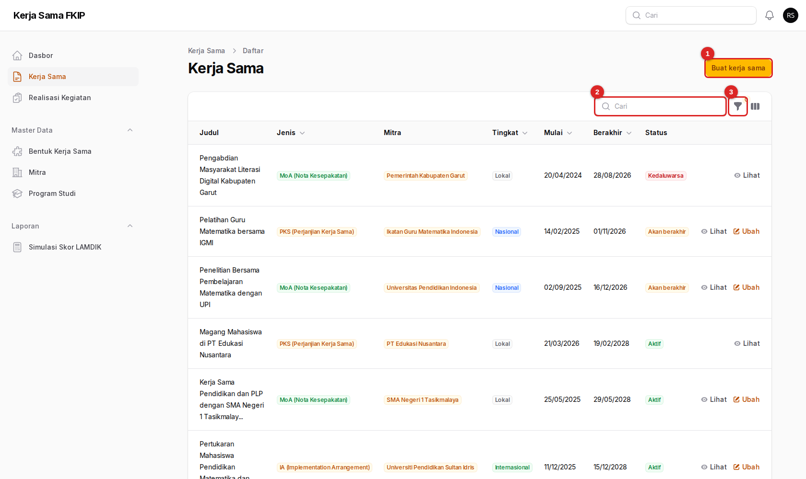
- Buat kerja sama — membuka formulir empat langkah.
- Cari — mencari berdasarkan judul.
- Filter — menyaring menurut status, tingkat, jenis dokumen, jenis mitra, prodi, atau tahun tanda tangan.
Pada kolom paling kanan, Lihat membuka rincian, sedangkan Ubah hanya muncul pada dokumen yang melibatkan prodi Anda.
03Membuat kerja sama baru
Formulir terdiri atas empat langkah. Anda dapat berpindah langkah dengan menekan judul langkah di bagian atas, lalu menekan Buat di bagian bawah bila semua isian wajib sudah terisi.
Langkah 1 — Identitas dokumen
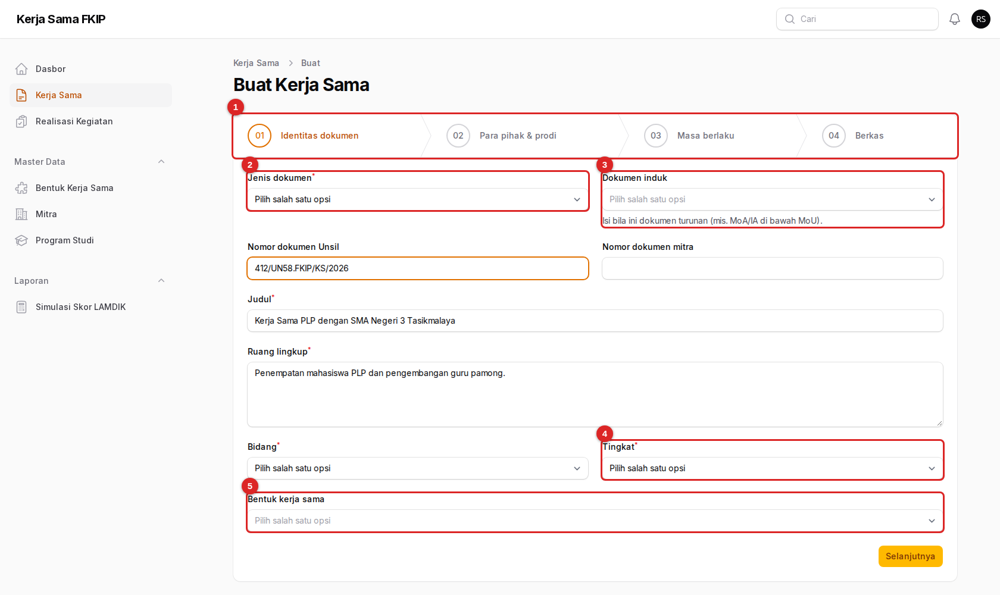
- Penanda langkah — empat langkah: Identitas dokumen, Para pihak & prodi, Masa berlaku, Berkas.
- Jenis dokumen (wajib) — MoU, MoA, PKS, atau IA.
- Dokumen induk — isi bila dokumen ini turunan, misalnya MoA atau IA di bawah sebuah MoU.
- Tingkat (wajib) — lokal, nasional, atau internasional.
- Bentuk kerja sama — boleh lebih dari satu, dipilih dari daftar baku berkode (misalnya
AK-DU-01).
Isian wajib lain: Judul, Ruang lingkup, dan Bidang (akademik, non-akademik, atau keduanya). Nomor dokumen Unsil dan nomor dokumen mitra diisi sesuai naskah.
Langkah 2 — Para pihak & prodi
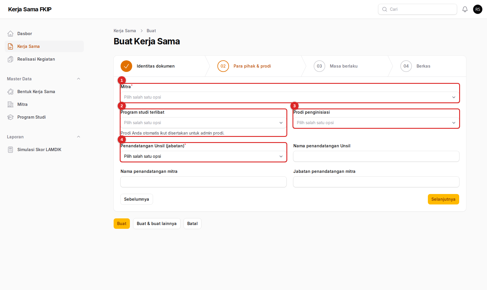
- Mitra (wajib) — pilih satu atau beberapa mitra yang sudah ada di master data.
- Program studi terlibat — prodi Anda otomatis disertakan.
- Prodi penginisiasi — prodi yang memprakarsai kerja sama.
- Penandatangan Unsil (wajib) — rektor, dekan, wakil dekan, kaprodi, atau lainnya.
Bila Anda memilih mitra luar negeri, sistem otomatis menetapkan tingkat Internasional dan menandai Perlu persetujuan Dirjen. Bila penandatangan Unsil bukan rektor, muncul peringatan karena kerja sama dengan pihak luar negeri lazimnya ditandatangani rektor (Permendikbud 14/2014 Pasal 48).
Mitra belum ada di daftar? Admin Prodi tidak dapat menambahnya. Minta Admin Fakultas mendaftarkan mitra terlebih dahulu, lalu lanjutkan.
Langkah 3 — Masa berlaku
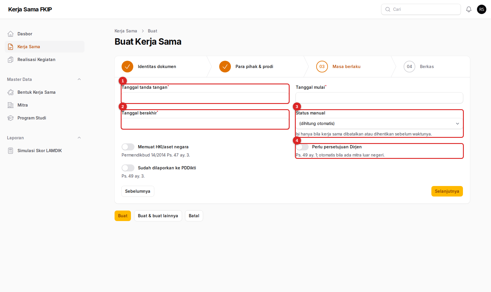
- Tanggal tanda tangan (wajib).
- Tanggal berakhir (wajib) — harus setelah tanggal mulai. Muncul peringatan bila berakhir setelah dokumen induknya.
- Status manual — biarkan (dihitung otomatis); isi hanya bila kerja sama dibatalkan atau dihentikan sebelum waktunya.
- Perlu persetujuan Dirjen — otomatis aktif bila ada mitra luar negeri. Tersedia pula Memuat HKI/aset negara dan Sudah dilaporkan ke PDDikti.
Isian Tanggal mulai juga wajib. Bila tanggal mulai lebih awal daripada tanggal tanda tangan, muncul peringatan berlaku surut; Anda tetap dapat melanjutkan bila memang demikian isi naskahnya.
Langkah 4 — Berkas
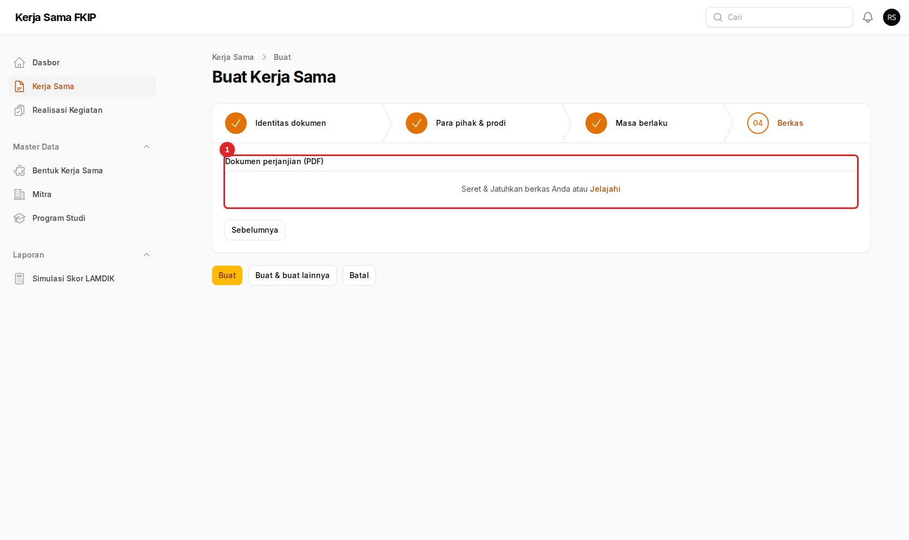
- Dokumen perjanjian (PDF) — seret berkas ke kotak ini atau tekan Jelajahi. Hanya PDF, maksimal 10 MB.
Untuk kerja sama dengan pihak asing, kolom tambahan Dokumen versi bahasa asing (PDF) muncul karena versi bahasa asing wajib dibuat (Permendikbud 14/2014 Pasal 47 ayat 4).
Setelah semua langkah selesai, tekan Buat. Pilih Buat & buat lainnya bila ingin langsung mencatat dokumen berikutnya.
04Mengubah kerja sama
- Dari daftar, tekan Ubah pada dokumen prodi Anda, atau tekan Ubah di halaman rincian.
- Perbaiki isian pada langkah yang sesuai, lalu tekan Simpan.
Tombol Hapus tidak tersedia untuk Admin Prodi. Bila dokumen salah catat dan perlu dihapus, minta Admin Fakultas melakukannya.
Perpanjangan dokumen dicatat sebagai dokumen baru dengan tanggal baru. Isi kolom Dokumen induk bila dokumen baru itu turunan dari MoU yang sama.
05Mencatat realisasi kegiatan
Setiap kegiatan yang sudah terlaksana atas dasar sebuah dokumen dicatat sebagai realisasi. Inilah yang dihitung dalam data akreditasi.
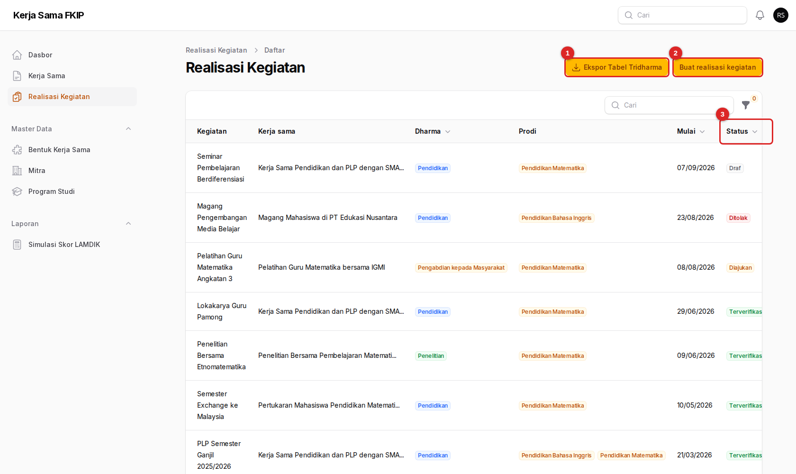
- Ekspor Tabel Tridharma — lihat bab Ekspor data akreditasi.
- Buat realisasi kegiatan — membuka formulir.
- Status — Draf, Diajukan, Terverifikasi, atau Ditolak (gulir tabel ke kanan bila kolom ini belum terlihat).
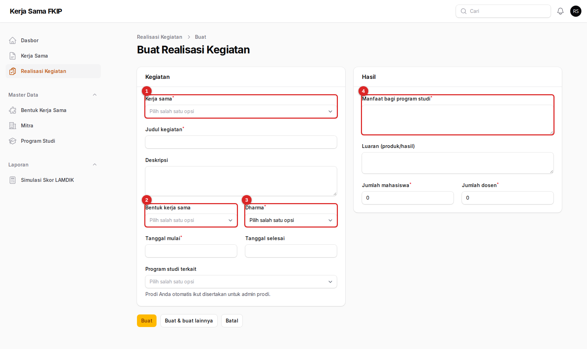
- Kerja sama (wajib) — dokumen yang menjadi dasar kegiatan. Bila Anda membuka formulir dari tab Realisasi kegiatan pada rincian dokumen, kolom ini terisi otomatis.
- Bentuk kerja sama — memilih bentuk akan mengisi Dharma secara otomatis.
- Dharma (wajib) — Pendidikan, Penelitian, atau PkM.
- Manfaat bagi program studi (wajib) — jelaskan manfaat nyata; teks ini muncul di tabel akreditasi.
Isian wajib lain: Judul kegiatan, Tanggal mulai, Jumlah mahasiswa, dan Jumlah dosen (isi 0 bila tidak ada). Tanggal selesai tidak boleh sebelum tanggal mulai. Tekan Buat; realisasi tersimpan sebagai Draf.
06Mengunggah bukti pelaksanaan
Bukti membuktikan kegiatan benar terjadi. Tanpa laporan, realisasi tidak dapat diverifikasi.
- Buka realisasi berstatus Draf atau Ditolak, lalu tekan Ubah.
- Gulir ke bagian Bukti pelaksanaan di bawah formulir dan tekan Buat berkas bukti.
- Pilih Jenis bukti, unggah berkasnya, lalu tekan Buat. Ulangi untuk setiap bukti.
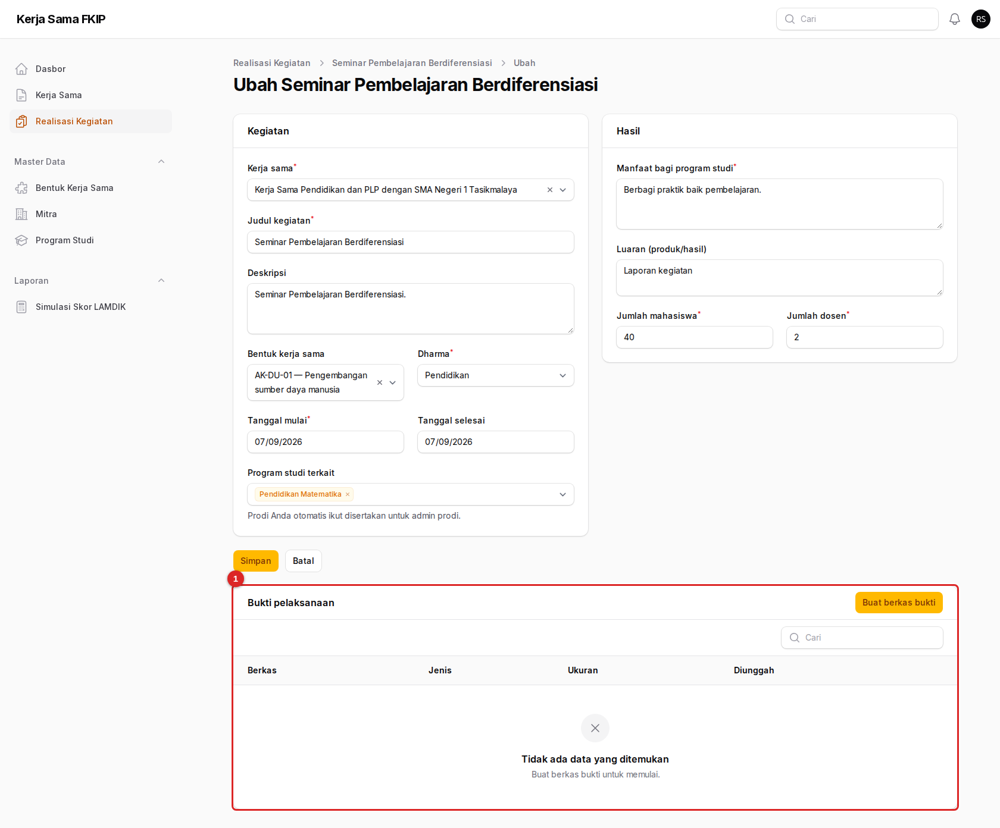
- Bukti pelaksanaan — tombol Buat berkas bukti berada di pojok kanan atas bagian ini.
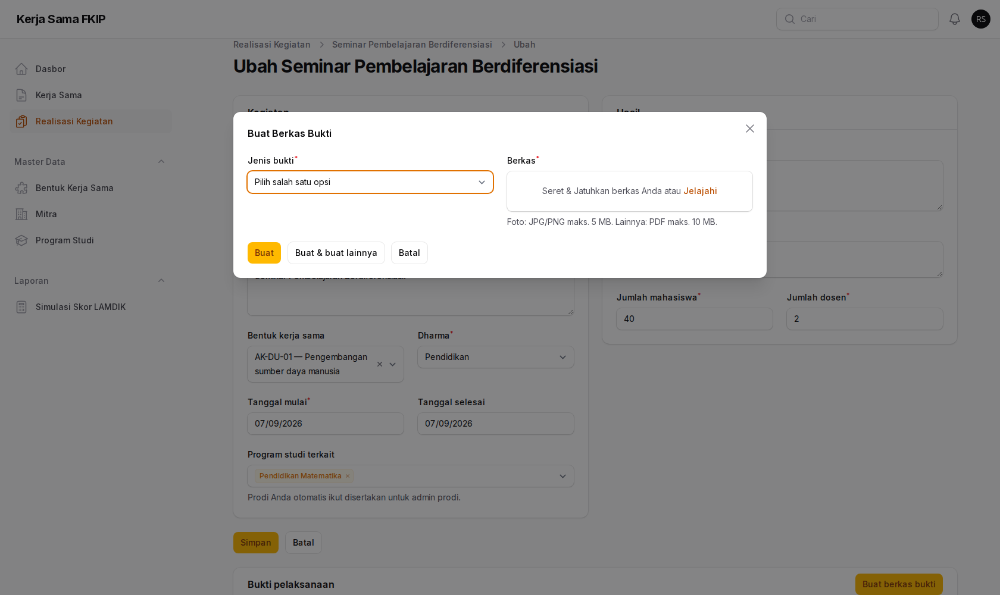
| Jenis bukti | Format | Ukuran maksimal |
|---|---|---|
| Laporan, Daftar hadir, Surat tugas, Lainnya | 10 MB | |
| Foto | JPG atau PNG | 5 MB |
Unggah minimal satu bukti berjenis Laporan. Admin Fakultas tidak dapat memverifikasi realisasi yang belum memiliki laporan.
Tombol Buat berkas bukti hanya ada pada halaman Ubah, bukan pada halaman Lihat. Halaman Lihat menampilkan daftar bukti untuk diunduh.
07Mengajukan untuk verifikasi
Setelah data dan bukti lengkap, kirim realisasi agar diperiksa Admin Fakultas.
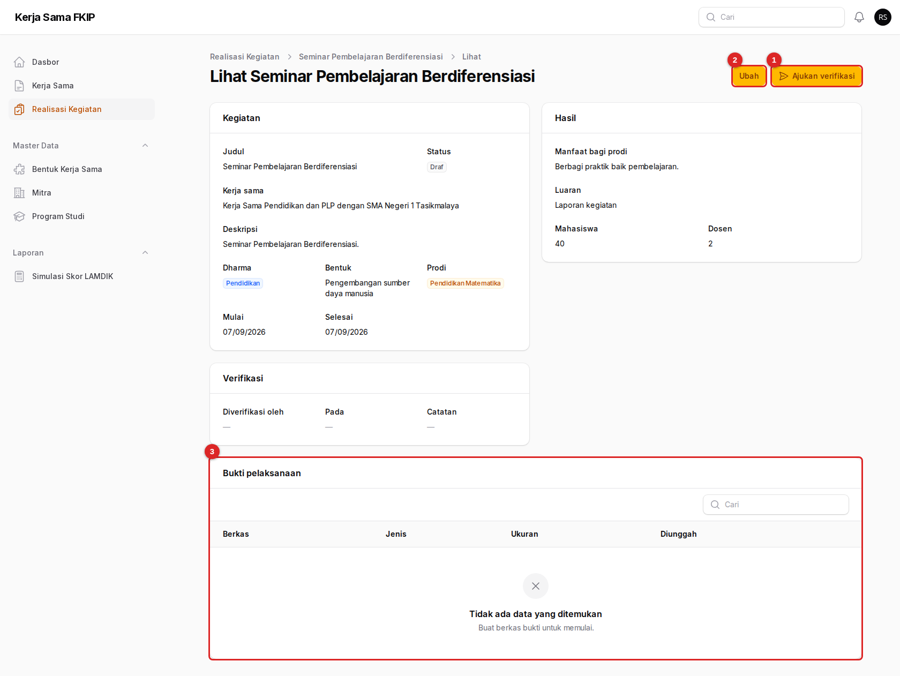
- Ajukan verifikasi — mengubah status menjadi Diajukan setelah Anda mengonfirmasi.
- Ubah — kembali ke formulir untuk melengkapi data atau bukti.
- Bukti pelaksanaan — daftar bukti yang sudah terunggah.
- Periksa kembali isian dan pastikan ada bukti berjenis Laporan.
- Tekan Ajukan verifikasi, lalu Konfirmasi.
- Status berubah menjadi Diajukan. Selama diajukan, realisasi terkunci dan tidak dapat Anda ubah.
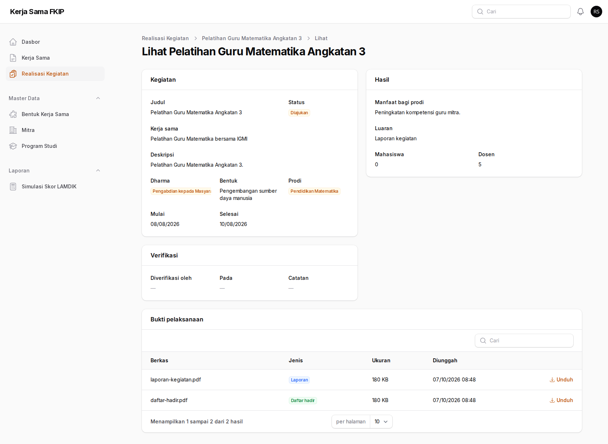
08Bila realisasi ditolak
Penolakan selalu disertai alasan. Perbaiki, lalu ajukan lagi.
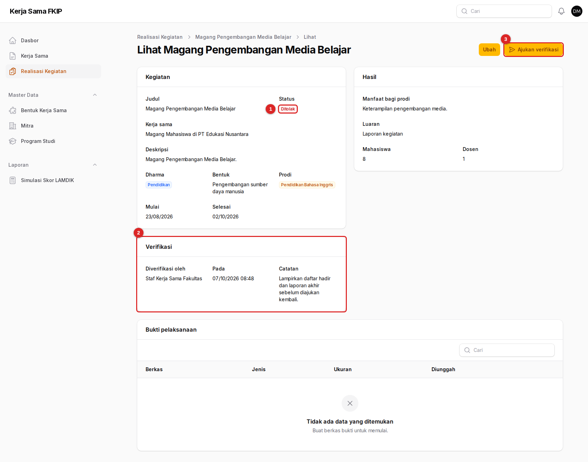
- Status berubah menjadi Ditolak.
- Verifikasi — memuat nama pemeriksa, waktu, dan Catatan alasan penolakan.
- Ajukan verifikasi — tersedia kembali setelah Anda memperbaiki.
- Baca catatan penolakan.
- Tekan Ubah, lengkapi data atau unggah bukti yang diminta.
- Kembali ke halaman Lihat dan tekan Ajukan verifikasi. Catatan lama dihapus saat Anda mengajukan ulang.
09Mengisi evaluasi keefektifan
Penilaian per tahun atas manfaat sebuah kerja sama, dipakai sebagai indikator (b) pada skor LAMDIK.
- Buka kerja sama prodi Anda, tekan Ubah, lalu pilih tab Evaluasi keefektifan.
- Tekan tombol pembuatan evaluasi dan isi Tahun (TS), Skor keefektifan (deskriptor LAMDIK), Analisis, dan Rekomendasi.
- Tekan Buat.

Evaluasi yang sudah dibuat tidak dapat dihapus; koreksi lewat tombol Ubah pada baris evaluasi.
10Ekspor data akreditasi
Tabel Kerja Sama Tridharma siap pakai untuk instrumen LAMDIK IAPSK 3.0.
- Buka Realisasi Kegiatan lalu tekan Ekspor Tabel Tridharma.
- Pilih Program studi (bawaan: prodi Anda) dan Tahun TS.
- Tekan Unduh. Berkas Excel tiga lembar (Pendidikan, Penelitian, PkM) akan terunduh.

Hanya realisasi berstatus Terverifikasi dalam rentang TS-2 sampai TS yang masuk ke berkas. Realisasi yang masih Draf atau Diajukan tidak ikut terhitung, jadi ajukan lebih awal sebelum batas penyusunan borang.
11Bantuan
Tombol Ubah tidak ada pada kerja sama tertentu
Kerja sama itu tidak melibatkan prodi Anda. Minta Admin Fakultas menambahkan prodi Anda pada dokumen tersebut, atau bila Anda ikut terlibat, minta mereka mengubahnya.
Tidak ada mitra yang cocok di daftar
Mitra didaftarkan oleh Admin Fakultas pada menu Master Data → Mitra. Kirimkan nama lembaga, jenis, negara, dan kontaknya kepada mereka.
Realisasi saya tidak kunjung diverifikasi atau dikembalikan karena bukti
Admin Fakultas tidak dapat memverifikasi realisasi yang belum memiliki bukti berjenis Laporan. Unggah laporan pada halaman Ubah, lalu ajukan lagi.
Unggahan ditolak
Periksa format dan ukuran: PDF maksimal 10 MB, foto JPG/PNG maksimal 5 MB. Jenis bukti Foto hanya menerima gambar, jenis lain hanya menerima PDF.
Tanggal berakhir ditolak
Tanggal berakhir harus setelah tanggal mulai. Periksa kembali pada langkah Masa berlaku.
Dasar-dasar penggunaan (masuk, notifikasi, istilah) ada di beranda panduan.